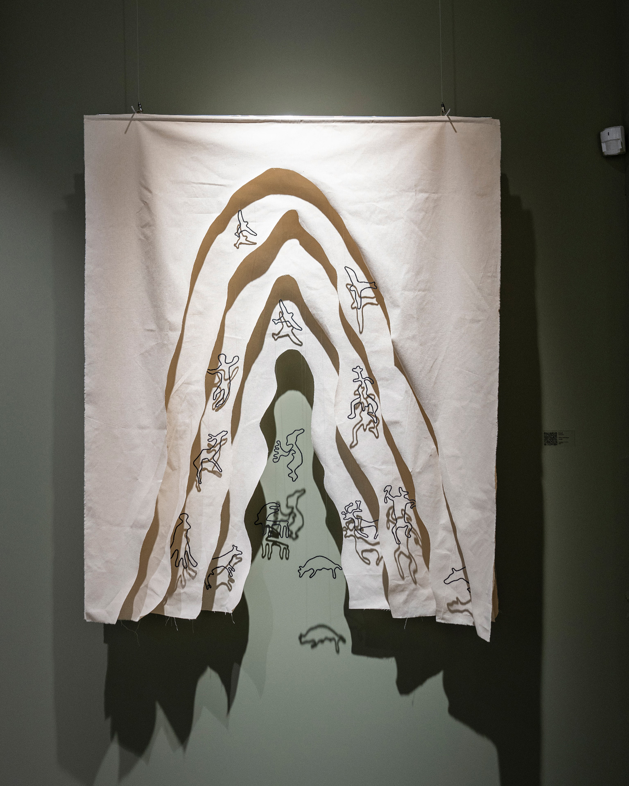
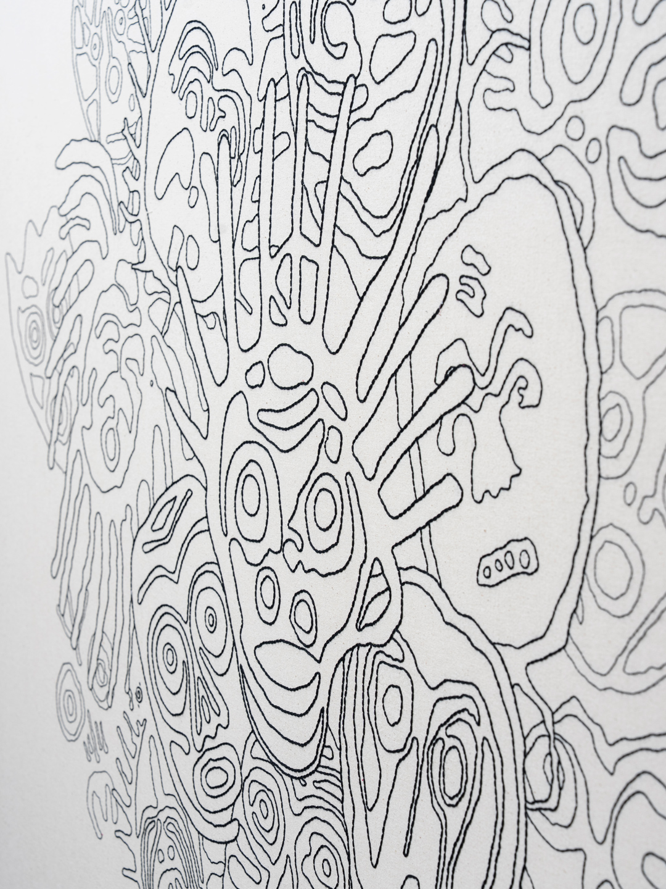
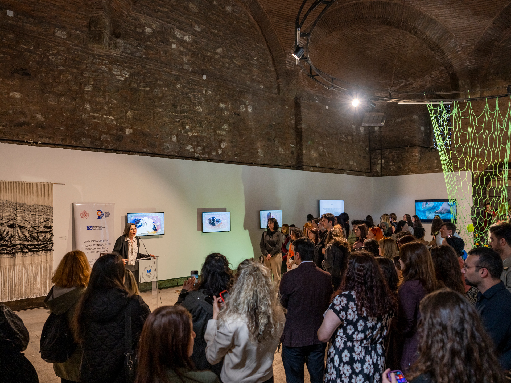

Award Exhibition | 2025
43rd Contemporary Artists Award
Akbank Sanat, Istanbul
Accepted to this highly prestigious exhibition organized by the Painting and Sculpture Museums Association, featuring the "A Shaman Village on the Steppe" artwork.

Group Exhibition | 2025
"The Exit"
Nelumbo Studios, Istanbul
An immersive curation displaying the deeply emotional spatial installation focusing on empathy and structural departures.

Group Exhibition | 2025
The Probability of Exceptions
EArt Gallery, Istanbul
Featuring the artwork "Today". This piece connects historical mask depictions from Central Asian shamanic rituals with the modern individual's layered defense mechanisms.

Solo Exhibition | 2024
"RE-"
Nelumbo Studios, Istanbul
An exploration of ossified uprisings, silenced hopes, and interconnected narratives through contemporary fiber art and installation.

Interactive Exhibition | 2023
Ortak Mekik (Shared Shuttle)
Koç University KARMA Lab & MSGSÜ, Istanbul
A massive collaborative project bringing traditional weaving, natural dyeing, and interactive technologies into VR spaces.